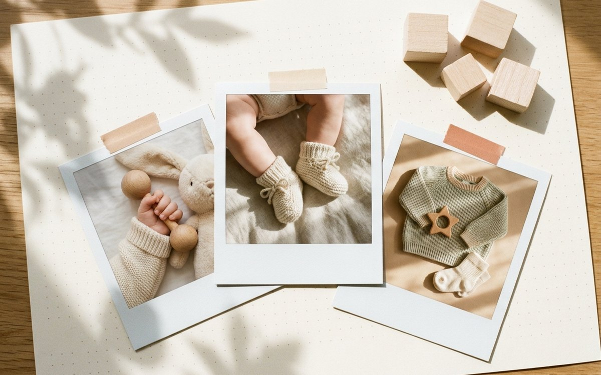
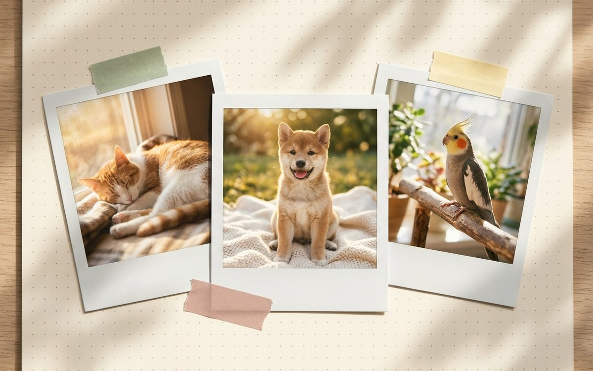
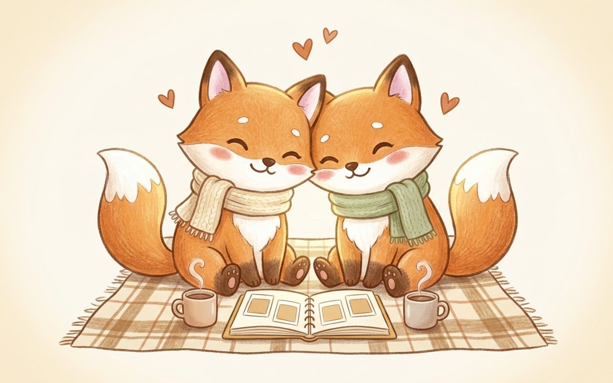
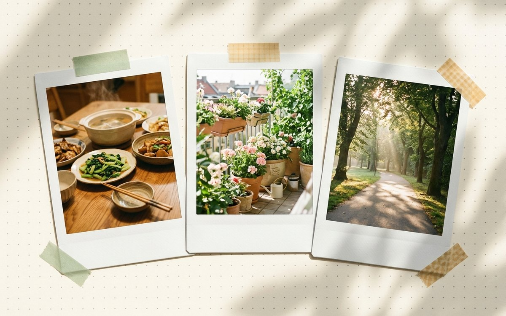

🌱 免費就能用
IDEA 01
👶 小孩成長年曆
「相簿裡幾千張寶寶照，總想年底做一本成長紀錄，卻忙到永遠沒空整理…」
每天隨手拍一張小孩吃飯、學走路或剛睡醒的瞬間，MoriSnap 自動排進月曆一天一張。不用特別收集，一年後回頭看，整整 365 天的成長年曆已經長好了。
📅 自動月曆🖼️ 手帳牆🎬 每週小電影
不用特別挑照片、也不用熬夜排版。小孩長大、毛孩撒嬌、情侶日常與遠方家人的每一天，按下快門就自動收成溫柔的手帳。


🌱 免費就能用「相簿裡幾千張寶寶照，總想年底做一本成長紀錄，卻忙到永遠沒空整理…」
每天隨手拍一張小孩吃飯、學走路或剛睡醒的瞬間，MoriSnap 自動排進月曆一天一張。不用特別收集，一年後回頭看，整整 365 天的成長年曆已經長好了。

🌱 免費就能用「貓咪翻肚、狗狗歪頭超可愛，但拍完就沉在手機相簿最底下再也沒翻出來…」
拍一下就變有日期的插畫風小卡，記錄他今天又在哪裡睡著。週末還會自動挑選精華、配上輕快音樂剪成小電影，完全不用自己剪片，就能收藏他陪你的每一週。

🌱 免費就能用「不想發公開動態給所有人看，只想要一個只有兩個人看得到的私密角落。」
免費開一本兩人專屬共享手帳，不用註冊帳號、沒有按讚留言壓力。把「冰箱貼」或「本月封面」小工具放到 iPhone 主畫面，解鎖手機就能看到他剛拍的日常。

🌱 免費就能用「長輩不會註冊複雜的 App，聊天室傳的照片過一陣子又會過期找不到。」
點一下邀請連結就能免費加入（免註冊、不吃爸媽的 iCloud 容量、也不會存爆手機相簿）。幫長輩放一顆桌面小工具，就算不拍照也能天天直接看到孫子與日常，還能一鍵印成 4×6 卡片！
No late-night album sorting. Kids growing up, sleepy pets, couple memories, and family check-ins automatically arrange into a cozy journal.
“Thousands of baby photos sit in my camera roll, and I never have time to organize a yearly book…”
Snap one casual moment a day—breakfast smiles, messy drawings, bedtime giggles. MoriSnap fills your calendar one photo per day automatically so a full 365-day year grows on its own.
“My cat’s cutest naps always get buried under screenshots and receipts.”
Every snap turns into a dated scrapbook card. On weekends, MoriSnap picks the highlights and edits a beat-synced movie with cozy music—zero video editing required.
“We don’t want a public social feed—just a quiet private book for the two of us.”
Start a free private shared journal with no account signup. Add a Home Screen Widget so every time you unlock your iPhone, your partner’s latest photo card greets you.
“Parents hate creating new accounts, and chat photos always expire or get lost.”
Tap one private invite link to join free—no account signup, 0 GB used on your parents’ iCloud, and zero posting pressure. Pin a Home Screen Widget so they see fresh grandkid & dinner photos every day without even opening the app.
アルバム整理は不要。子どもの成長、ペットの寝顔、恋人との記念日、離れた家族への近況報告まで、撮るだけで一冊にまとまります。
「スマホに子どもの写真は何千枚もあるのに、忙しくてまとめる時間がない…」
毎日 1 枚パシャッと撮るだけで、カレンダーに 1 日 1 枚ずつ自動で並びます。特別な整理をしなくても、1 年後には 365 日の成長記録が完成しています。
「猫のあくびや犬の寝顔、撮ったままアルバムの奥に埋もれてしまう…」
撮るだけで日付入りの手帳カードに。週末には自動でベストショットを選んで音楽つき音ハメムービーを作ってくれるので、編集ゼロで可愛い思い出が残ります。
「SNS に公開するほどじゃないけれど、ふたりだけの秘密のアルバムがほしい。」
アカウント不要で無料の共有手帳をスタート。ホーム画面ウィジェットを置けば、スマホを開くたびにパートナーが撮ったばかりの日常カードが届きます。
「両親は新しいアプリの会員登録が苦手。トークで送った写真もすぐ流れてしまう。」
招待リンクひとつで無料参加（会員登録不要・ご両親の iCloud 容量消費ゼロ）。ホーム画面ウィジェットを置けば「見る専」でも毎日そっと孫の笑顔や近況を眺められます。
사진 정리할 시간이 없어도 괜찮아요. 아이의 성장, 반려동물의 일상, 연인과의 기록, 멀리 사는 가족 안부까지 찍는 순간 알아서 정리됩니다.
“휴대폰에 아기 사진은 수천 장인데, 정리할 시간이 없어 연말마다 포기하게 돼요…”
매일 한 장씩 편하게 찍어두면 달력에 하루 한 장씩 자동으로 채워져요. 따로 모으지 않아도 1년 뒤엔 365일 성장 연력이 저절로 완성됩니다.
“고양이 하품, 강아지 꿀잠 사진을 찍어두기만 하고 앨범 속에 묻어두고 있어요.”
찍자마자 날짜가 담긴 다이어리 카드로 변신! 주말마다 알아서 하이라이트를 골라 음악이 담긴 비트 영상으로 만들어 주니 편집 없이도 매주가 작품이 돼요.
“남들 다 보는 피드 말고, 우리 둘만 편하게 볼 수 있는 공간이 있었으면 좋겠어요.”
회원가입 없이 둘만의 무료 공유 다이어리를 열어보세요. 홈 화면 위젯을 올려두면 폰을 켤 때마다 연인이 방금 찍은 일상이 바로 보입니다.
“부모님이 복잡한 가입을 어려워하시고, 채팅방 사진은 금방 지나가 버려요.”
초대 링크 한 번이면 무료 참여(가입 없음·부모님 iCloud 용량 부담 0). 홈 화면에 위젯만 올려두면 사진을 직접 찍지 않아도 매일 손주와 가족의 일상이 자동으로 업데이트돼요.